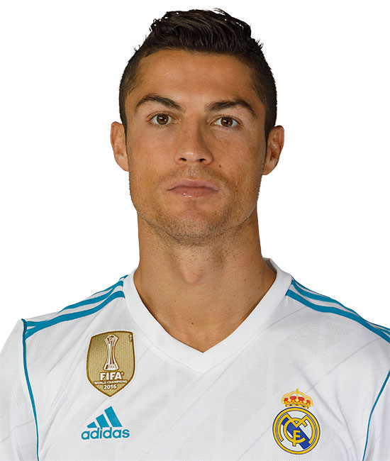
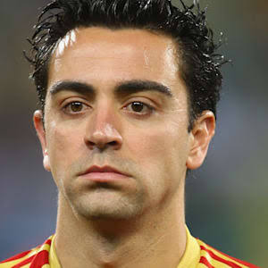
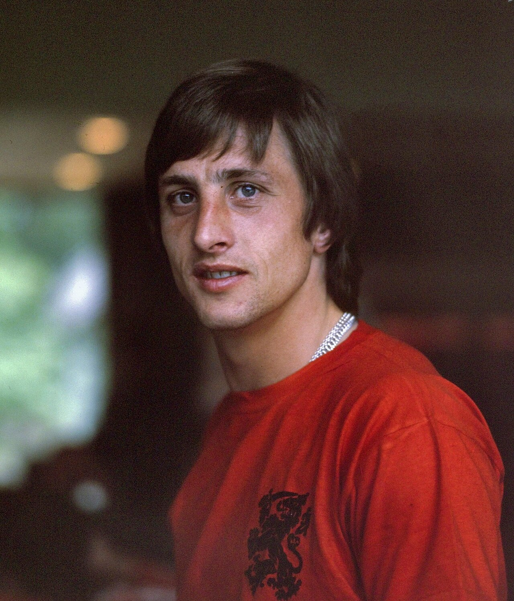
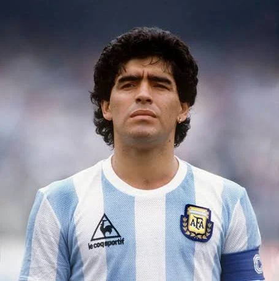

Lionel Messi
Considerat per molts el millor futbolista de tots els temps. Guanyador de 8 Balons d'Or, campió del món amb l'Argentina i màxim golejador històric del FC Barcelona.
Passa el cursor per sobre de cada jugador per descobrir la seva història i el seu llegat.
Considerat per molts el millor futbolista de tots els temps. Guanyador de 8 Balons d'Or, campió del món amb l'Argentina i màxim golejador històric del FC Barcelona.

Un depredador de l'àrea amb una capacitat física inigualable. Màxim golejador històric de la Champions League, guanyador de 5 Balons d'Or i llegenda del Real Madrid.
Màgia pura i desequilibri brasiler. Campió de la Copa Libertadores amb el Santos, de la Champions amb el Barça i màxim golejador històric de la selecció del Brasil.

El cervell del millor mig del camp de la història. Mestre del joc de posició i la passada, peça clau en els èxits del FC Barcelona i en el Mundial i Eurocopes d'Espanya.

El revolucionari del futbol modern. Líder del Futbol Total amb l'Ajax i els Països Baixos, va canviar per sempre la mentalitat i l'estil del FC Barcelona com a jugador i entrenador.

Icona eterna del futbol mundial. Capaç de guanyar gairebé sol el Mundial de Mèxic 1986 i de portar el Nàpols al cim del futbol italià i europeu amb la seva cama esquerra.
Actualitza la teva contrasenya d'accés a la zona de socis.